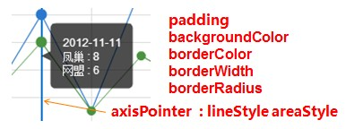

tooltip
提示框，鼠标悬浮交互时的信息提示。
| 名称 | 默认值 | 描述 |
|---|---|---|
| {boolean} show | true | 显示策略，可选为：true（显示） | false（隐藏） |
| {number} zlevel | 1 | 一级层叠控制。每一个不同的zlevel将产生一个独立的canvas，相同zlevel的组件或图标将在同一个canvas上渲染。zlevel越高越靠顶层，canvas对象增多会消耗更多的内存和性能，并不建议设置过多的zlevel，大部分情况可以通过二级层叠控制z实现层叠控制。 |
| {number} z | 8 | 二级层叠控制，同一个canvas（相同zlevel）上z越高约靠顶层。 |
| {boolean} showContent | true | tooltip主体内容显示策略，只需tooltip触发事件或显示axisPointer而不需要显示内容时可配置该项为false， 可选为：true（显示） | false（隐藏） |
| {string} trigger | 'item' | 触发类型，默认数据触发，见下图，可选为：'item' | 'axis' |
| {Array | Function} position | null | 位置指定，传入{Array}，如[x, y]， 固定位置[x, y]；传入{Function}，如function([x, y]) {return [newX,newY]}，默认显示坐标为输入参数，用户指定的新坐标为输出返回。 |
| {string | Function} formatter | null | 内容格式器：{string}（Template） | {Function}，支持异步回调见表格下方 |
| {string | Function} islandFormatter | '{a} < br/>{b} : {c}' | 拖拽重计算独有，数据孤岛内容格式器：{string}（Template） | {Function}，见表格下方 |
| {number} showDelay | 20 | 显示延迟，添加显示延迟可以避免频繁切换，特别是在详情内容需要异步获取的场景，单位ms |
| {number} hideDelay | 100 | 隐藏延迟，单位ms |
| {number} transitionDuration | 0.4 | 动画变换时长，单位s，如果你希望tooltip的跟随实时响应，showDelay设置为0是关键，同时transitionDuration设0也会有交互体验上的差别。 |
| {boolean} enterable | false | 鼠标是否可进入详情气泡中，默认为false，如需详情内交互，如添加链接，按钮，可设置为true。 |
| {color} backgroundColor | 'rgba(0,0,0,0.7)' | 提示背景颜色，默认为透明度为0.7的黑色 |
| {string} borderColor | '#333' | 提示边框颜色 |
| {number} borderRadius | 4 | 提示边框圆角，单位px，默认为4 |
| {number} borderWidth | 0 | 提示边框线宽，单位px，默认为0（无边框） |
| {number | Array} padding | 5 | 提示内边距，单位px，默认各方向内边距为5，接受数组分别设定上右下左边距，同css |
| {Object} axisPointer | {
type: 'line',
lineStyle: {
color: '#48b',
width: 2,
type: 'solid'
},
crossStyle: {
color: '#1e90ff',
width: 1,
type: 'dashed'
},
shadowStyle: {
color: 'rgba(150,150,150,0.3)',
width: 'auto',
type: 'default'
}
} |
坐标轴指示器，默认type为line，可选为：'line' | 'cross' | 'shadow' | 'none'(无)，指定type后对应style生效，见下
lineStyle设置直线指示器（详见lineStyle）, crossStyle设置十字准星指示器（详见lineStyle）, shadowStyle设置阴影指示器（详见areaStyle），areaStyle.size默认为'auto'自动计算，可指定具体宽度 |
| {Object} textStyle | { color:'#fff' } | 文本样式，默认为白色字体（详见textStyle） |
内容格式器formatter
-
{string}，模板（Template），其变量为：
- {a} | {a0}
- {b} | {b0}
- {c} | {c0}
- {d} | {d0} （部分图表类型无此项）
- {e} | {e0} （部分图表类型无此项）
- 多值下则存在多套{a1}, {b1}, {c1}, {d1}, {a2}, {b2}, {c2}, {d2}, ...
- 其中变量a、b、c、d在不同图表类型下代表数据含义为：
- 折线（区域）图、柱状（条形）图、K线图 : a（系列名称），b（类目值），c（数值）, d（无）
- 散点图（气泡）图 : a（系列名称），b（数据名称），c（数值数组）, d（无）
- 地图 : a（系列名称），b（区域名称），c（合并数值）, d（无）
- 饼图、雷达图、仪表盘、漏斗图: a（系列名称），b（数据项名称），c（数值）, d（饼图：百分比 | 雷达图：指标名称）
- 力导向图, 和弦图 :
- 节点 : a（系列名称），b（节点名称），c（节点值）, d(节点类目索引)
- 边 : a（系列名称），b（边名称，默认为大端节点名称-小端节点名称），c（link.value）, d(大端节点 name 或者 index), e(小端节点 name 或者 index)
-
{Function}，传递参数列表为[params, ticket, callback]，详见下：
- <Array> params : 数组内容同模板变量，
[ { seriesIndex: 0, seriesName: '一周销量', name: '周一', dataIndex: 0, data: data, name: name, value: value, percent: special, // 饼图 indicator: special, // 雷达图、力导向、和弦 value2: special2, // 力导向、和弦 indicator2: special2 // 力导向、和弦 }, {..}, ... ] - <String> ticket : 异步回调标识
- <Function> callback : 异步回调，回调时需要两个参数，第一个为前面提到的ticket，第二个为填充内容html
- *函数回调时this指针指向当前图表实例（myChart）
- <Array> params : 数组内容同模板变量，
| item触发 | axis触发 |
|---|---|
 |
 |